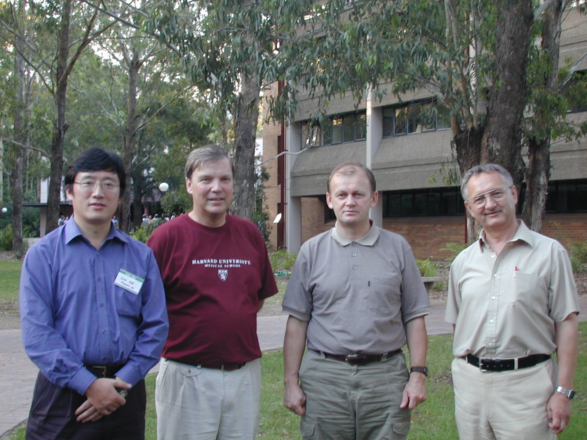

Computational Statistics Research Group
The Computational Statistics Research Group (CSRG) of Department of
Statistics was formed by Professor Vic Solo and Associate Professor Malcolm
Hudson in 1992 to develop Computational Statistics and related research
within the Department and to create an international research presence
for the Department. Computational Statistics and Finance has since been
recognised as a key research group within the University, one of three
based within Division of Economic and Financial Studies.
One area of the research conducted within CSRG is statistical reconstruction
for Medical Imaging technologies. Close collaboration is maintained with
medical Physics units within Westmead Hospital and Royal Prince Alfred
Hospital.
Professor Mirek
Pawlak (2nd from right) , University of Manitoba, with (left to right)
Dr. Jun Ma, Prof. Malcolm Hudson and Dr. Andrzej Kozek at the Meeting ICRA,
December 2001, in Wollongong.
Several members of the faculty are associated
with CSRG, it maintains a network of powerful workstations, with dedicated
statistical software (MATLAB, S-Plus, etc.) and Linux operating system,
linking to the University's UNIX server (laurel).
Functions of CSRG are currently:
-
Computational Statistics related research and development, involving:
-
presentation of research in published form at scientific meetings;
-
research student supervision;
-
research projects supported by research grants;
-
encouraging co-ordination of undergraduate and graduate Units and student
entry into Computational Statistics fields.
-
Work towards international standing.
-
Participation in Information Sciences programs, including the Master of
International Business Units:
-
Electronic Commerce: Database Management
-
Decision Support Systems
-
Information Technology Workshop
Recent students whose PhD's were supervised within CSRG and other researchers
associated with our group include:
Dr. Sarah Ratcliffe, now University of Pennsylvania, USA
Dr. Songyang Yu, now University of Maryland, USA
Dr. Lydia Ng, now University of Washington, USA
Several honours students have their thesis research within CSRG.
The group attracts a number of international research visitors, recently:
Prof. N. Arghami, Univ. Masshad, Iran
Dr Veronique Baccarne, U. Brest, France
Dr George Kontaxakis, DKFZ, Germany
Dr. Joerg Peter, University Medical Centre, UNC, USA
A guide to
the Web for Statisticians
Malcolm Hudson
Associate Professor
e-mail: Malcolm.Hudson@mq.edu.au
Phone: 61 2 9850 8557
Fax: 61 2 9850 7669
Last modified: January, 2001